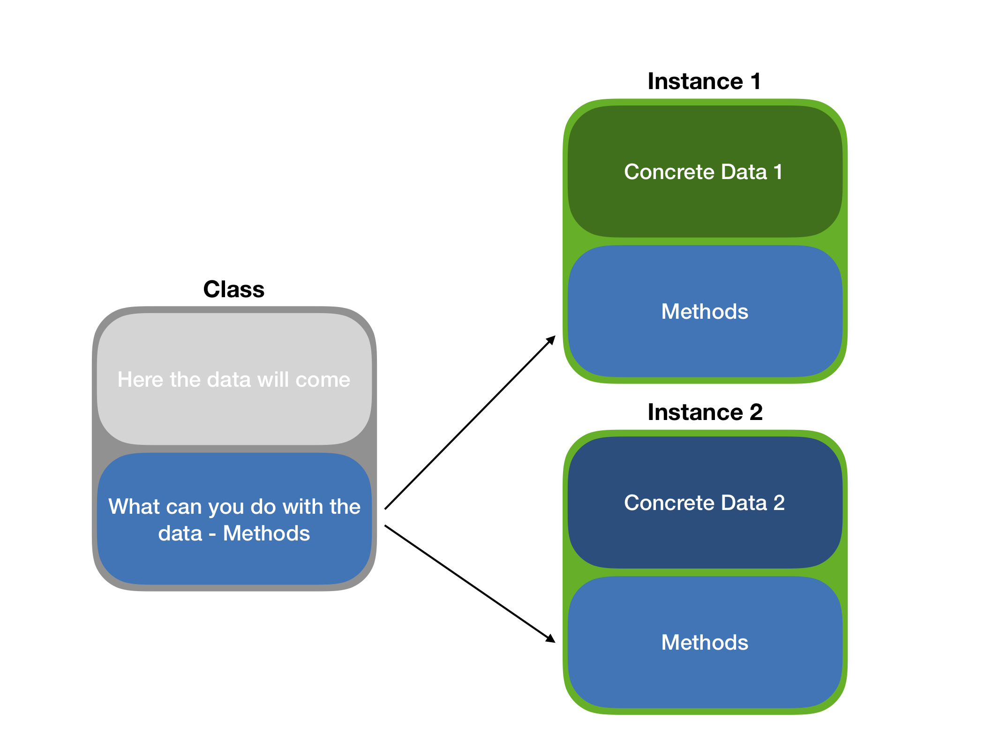
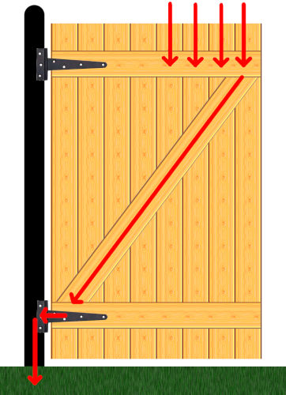

# declare class
setClass('gene', representation(name='character', coords='numeric'))
# instantiate class
my.gene <- new("gene", name = "ANK3", coords = c(1.4e6, 1.412e6))
# declare class
.intragenic_region <- setClass(Class = 'intragenic_region',
slots = c(name='character', coords='numeric'))
# instantiate class
# but since SetClass returns a low-level constructor
my.intra1 <- .intragenic_region(name = 'int1',
coords = c(1.7e6, 1.717e6))Object-Oriented Programming Models in R
RaukR 2024 • Advanced R for Bioinformatics
Marcin Kierczak
19-Feb-2024
Object Oriented Programming
- A programming paradigm.
- We work with objects.
- Reflects many real-life systems – easy to model things.
- Plato’s cave (?): ideal objects – classes, reflections – instances.

OOP Systems in R
- S3 – basic R OOP system,
- S4 – a bit more advanced OOP, common in, e.g. Bioconductor,
- RC – Reference Classes, the most advanced and close to, e.g. Java OOP, extension of S4,
- R6 – simplified RC, extension of S3,
require(R6)
S4 classes
S4 classes are more advanced as you actually define the structure of the data within the object of your particular class:
Inheritance in S4
.ext_gene <- setClass(Class = 'ext_gene',contains = "gene",
slots = c(gene = 'gene', feature_name = 'character', feature_value = 'character')
)
ANK3 <- .ext_gene(name = 'ANK3', coords = c(1.4e6, 1.412e6),
feature_name = 'num_introns', feature_value = '5')
str(ANK3)Formal class 'ext_gene' [package ".GlobalEnv"] with 5 slots
..@ gene :Formal class 'gene' [package ".GlobalEnv"] with 2 slots
.. .. ..@ name : chr(0)
.. .. ..@ coords: num(0)
..@ feature_name : chr "num_introns"
..@ feature_value: chr "5"
..@ name : chr "ANK3"
..@ coords : num [1:2] 1400000 1412000Sealed Class
Preventing double class definition:
But to prevent this:
S4 class – slots
The variables within an S4 class are stored in the so-called slots. In the above example, we have 2 such slots: name and coords. Here is how to access them:
S4 class – methods
The power of classes lies in the fact that they define both the data types in particular slots and operations (functions) we can perform on them. Let us define a generic print function for an S4 class:
S3 Classes
An S3 class object is one of R base types (e.g. integer) with class attribute set:
Custom str Methods
Some S3 classes provide a custom str, e.g.:
Generic Methods and Method Dispatch
Have you ever wondered why print() or summary() work on many types (classes) of data?
They are so-called generics, i.e. functions and methods that operate on classes. They know which method to apply to which class thanks to the process of method dispatch.
The naming scheme for generics is: generic.class() i.e. a generic that applies to the class class.
Examples:
print.factor(),print.default(),print.data.frame().
To see the code of a method:
Creating S3 Classes
To create an S3 class, simply give a name to a data structure:
OR
You can use some inheritance too:
Checking for Correctness
Call:
lm(formula = log(mpg) ~ log(disp))
Coefficients:
(Intercept) log(disp)
5.3810 -0.4586 S C A R Y !
Software engineering


Design patterns

R and Design Pattern
- strategy —
apply() - decorator —
system_time()
user system elapsed
0.002 0.000 0.003
[1] 0.96678012 0.45506493 0.22684051 0.05240007 0.52882557- wrapper
- Singleton see this gist
- Fluent function interface —
tidyversefunctions take dataxas the very first argument and return object similar toxso that they can be chained by%>%
Even more patterns here.
Safe S3 – Constructor
Safe S3 – Validator
Safe S3 – Helper
Building S3 Classes – Styles
One can build an S3 class on top of any existing base type, e.g. a named list:
Introduction to R6 classes
require(R6),- Do not rely on S4 like RC, but on S3,
- Are faster than RC,
- Do not do copy-on-modify,
- Thus provide OO model similar to C++ or Java.
- Methods belong to objects, not to generics.
R6 Class Example
library(R6)
Person <- R6Class("Person",
public = list(
name = NULL,
hair = NULL,
initialize = function(name = NA, hair = NA) {
stopifnot(is.character(name), is.character(hair))
self$name <- name
self$hair <- hair
self$greet()
},
set_hair = function(val) {
self$hair <- val
},
greet = function() {
cat(paste0("Hello, my name is ", self$name, ".\n"))
}
)
)R6 in Action
R6 – methods
R6 copy-on-modify
R6 – clone()
Thank you! Questions?
_
platform x86_64-pc-linux-gnu
os linux-gnu
major 4
minor 3.2 2024 • SciLifeLab • NBIS • RaukR